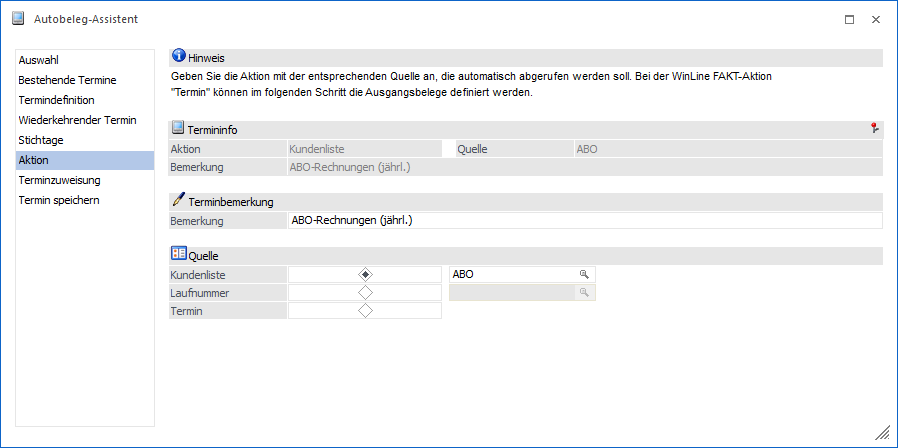
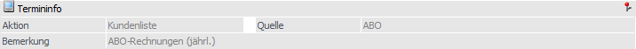
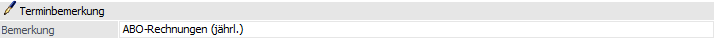
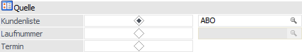

Im Bereich "Aktionen" wird die Art des Autobelegs, d.h. der Duplizierung, definiert.
Hinweis
Dieser Bereich wird nur bei der Neuanlage eines Termins angeboten. Handelt es sich um einen bestehenden Termin, so wird die Änderung direkt in der Tabelle Terminübersicht durchgeführt.

Folgende Einstellungen und Information stehen in diesem Bereich zur Verfügung:
Termininfo

An dieser Stelle werden Informationen zu dem neuen Termin dargestellt. Alle weiteren Aktionen (z.B. Anwahl des Buttons "Start") und Änderungen erfolgt für diesen Termin.
Terminbemerkung

Ø Bemerkung
An dieser Stelle wird die Terminbemerkung hinterlegt.
Quelle

Ø Aktion
Über die Radiobuttons wird die Variante der Belegduplizierung gewählt:
ü Kundenliste
Ein Quellbeleg
eines Kunden / Lieferanten / Interessenten wird auf eine beliebige Zahl von
Zielkunden / -lieferanten / -interessenten dupliziert. Die Definition von
Quellbeleg und Zielkonten findet über das Programm Autobeleg - Kundenliste statt und wir
ich folgenden Eingabefeld hinterlegt.
ü Laufnummer
Die Duplizierung
erfolgt für alle Personenkonten bzw. Interessenten, welche einen Ursprungsbeleg
mit der nachfolgend zugewiesenen Laufnummer besitzen.
ü Termin
Die Duplizierung erfolgt
für alle im Bereich Terminzuweisung
zugewiesenen Konten / Laufnummern.